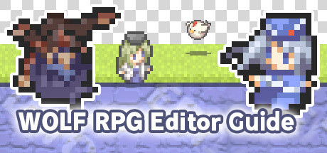

 |
WOLF RPG Editor Complete Guide (“The Perfect Guide”)
This site is a beginner‑friendly guide for using WOLF RPG Editor (commonly called "Woditor" in English and "Udita" (ウディタ) in Japan).
It covers:
- Things you might want to create
- Common issues and how to solve them
- Clear steps for doing it all directly in Woditor
※ Note: The original Japanese guide was based on Woditor Version 2.x, so some screenshots and terms may differ from the English release.
<Table of Contents>
[Essential Knowledge] Start here!
These basics make everything else easier to understand.
[Basic System]
Perfect if you want to know how to use the built‑in “Basic System”.
[Event Creation]
Learn how to create different types of events.
[Map Creation]
Tips and techniques for building great maps.
[Basic Settings]
A closer look at the game’s core settings.
[Using Downloaded Assets/Common Events]
For using assets you’ve downloaded from elsewhere.
[Creating Assets]
For users who want to make their own assets.
[Effects & Presentation]
Learn how to add visual and audio effects to your game.
[Errors and Strange Behavior]
When something behaves strangely, start here.
[Beyond the Basics]
For creators who feel ready to level up.
[For Veteran Users]
Advanced techniques for pushing Woditor even further.
[If you don't see the navigation menu on the left, click here]
Copyright © SmokingWOLF. All rights reserved.
English edition lovingly prepared by Anya & Lolo.
※ This is a faithful translation of the original guide. Some sections include minor editorial additions, such as terminology explanations, extra examples, and beginner-friendly clarifications, while preserving the original intent and instructions. Updated screenshots have also been added, as the original guide was written using Version 2 screenshots.